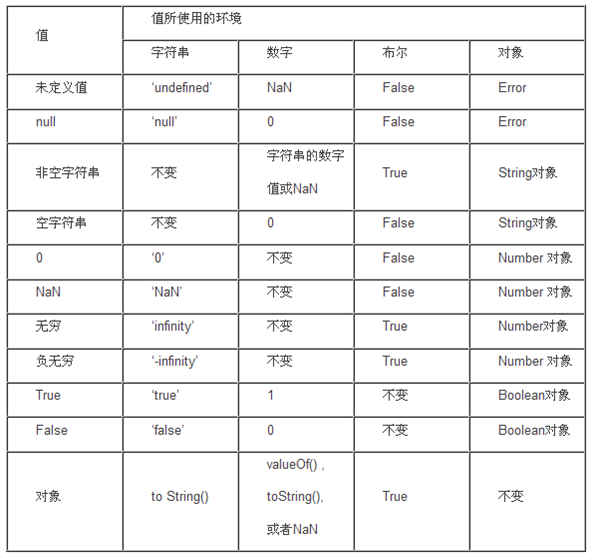
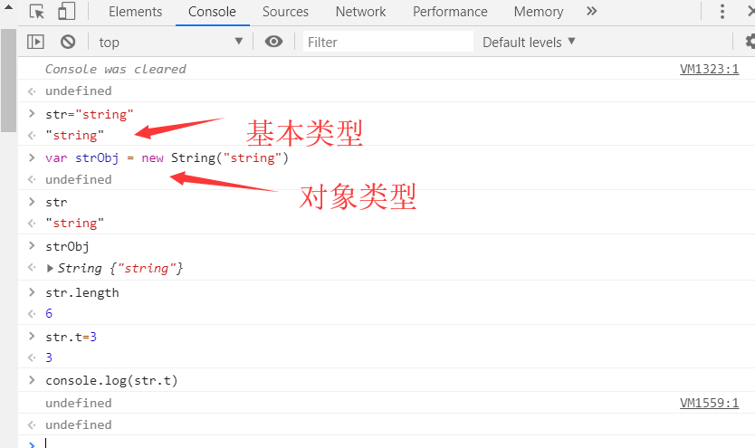
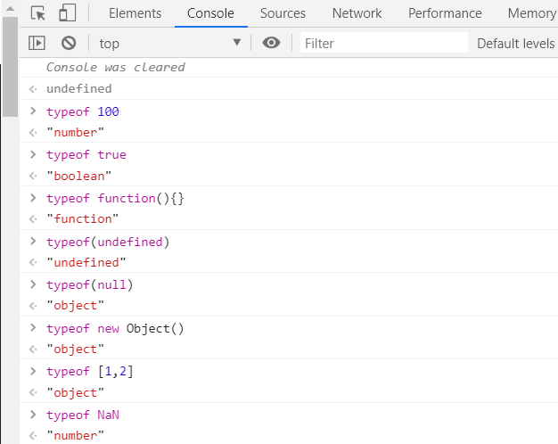
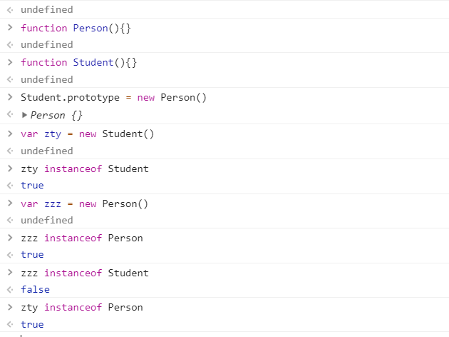
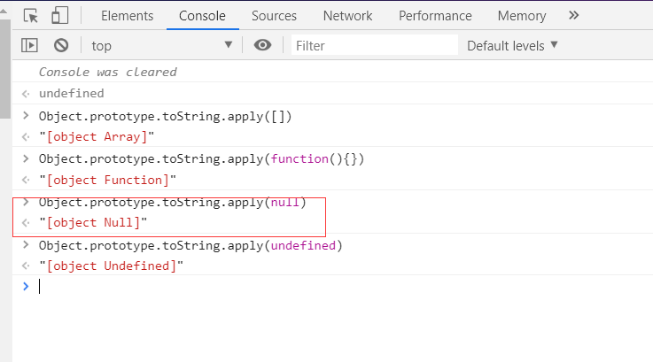

数据类型
六种数据类型
基本数据类型(5种)
- number
- 整数
- 小数
- NaN
- infinity
- -infinity
- string
- boolean
- null
- undefined
对象类型
Object
- Function(函数)
- Array(数组)
- Date(日期)
…
隐式转化（数据类型的自动转化）
- 转化成字符串
String(内容)
传什么出来什么的字符串格式，类似于java的对象.toString(),变量+””,String.valueOf(内容)String(123)–>”123”
String(undefined)–>”undefined”
…
转化成布尔:
Boolean(内容)
只有六种情况转化成布尔是falseBoolean(undefined)–>false
Boolean(null)–>false
Boolean(“”)–>false
Boolean(0)–>false
Boolean(NaN)–>false
Boolean(false)–>false转化成数字:
Number(内容)
Number()undefined–>NaN
Number(null)–>0
Number(“123”)–>123
Number(“00123”)–>123
Number(“123abc”)–>NaN
Number(true)–>1
Number(false)–>0
巧用+/-转化
var = 'This answer is ' + 42; >> 'This answer is 42.'
var = '11' - 1 >> 10== 和 ===
== 等值符,类型相同直接比较值，类型不同转化成相同类型再比较值。
- 如果是数字，布尔，字符串三者进行比较，转化成数字进行比较
- 如果出现了null或者undefined，则不进行类型的转化，null和undefined除了和自己相等就彼此相等
- null==null (true)
- undefined==undefined (true)
- null==undefined (true)
- NaN==NaN(false)NaN和所有包括自己都是不相等的
=== 等同符
类型相同比较值，类型不同直接false。
123===123(true)
true==="true"(类型不同直接false)
NaN===NaN(类型相同,也不相等,NaN和所有包括自己都是不相等的)
转换补充

包装对象(类似与java包装类)
如图
str是基本类型，通过str.length获取长度，此时内部有以下操作
var xxx = new String(str)
xxx.length()
先将str包装成对象，再通过对象获取其长度。
而str.t=3给对象赋值，也是通过
var xxx = new String(str)
xxx.t=3
当再次获取str.t值时时undefined
因为str.t在赋值时包装成对象后赋值完成后即被销毁，再次获取就undefined。
类型检测
typeof

注意：typeof(null)==="object"
typeof主要用于基本类型判断
instanceof
对象类型判断用instanceof，基于原型链的。obj instanceof Object
obj的原型链上是否有Object的构造函数的prototype属性[1,2] instanceof Array --->truenew Object() instanceof Array --->false

使用Student.prototype = new Person()
Student.prototype属性指向Person对象var zty = new Student()构造函数构造，zty是一个Student对象zty instanceof Student–>truezty instanceof Person–>true
Student.prototype指向Person对象，zty对象也是Person对象实例，类似java的父类子类
而var zzz = new Person()实例一个Person对象，zzz不是Student的实例
注意：不同window和iframe间的对象不能使用instanceof
Object.prototype.toString

注意：IE6/7/8 Object.prototype.toString.apply(null)–>”[object Object]”
constructor
duck type
表达式和运算符
变量的声明和赋值:
声明:
var 变量名;
赋值:
变量名=值;
声明+赋值:
var 变量名=值;
局部变量:
以var声明在函数内部的变量是局部变量
全局变量:
- 写在函数外部的变量
- 不以var声明在函数内部的变量，要使用这种全局变量必须先执行该全局变量所在的函数。
注意:
| 运算符 | 描述 | 示例 |
|---|---|---|
| + | 加法 | |
| - | 减法 | |
| * | 乘法 | |
| / | 除法 | |
| % | ||
| ++ | ||
| – |